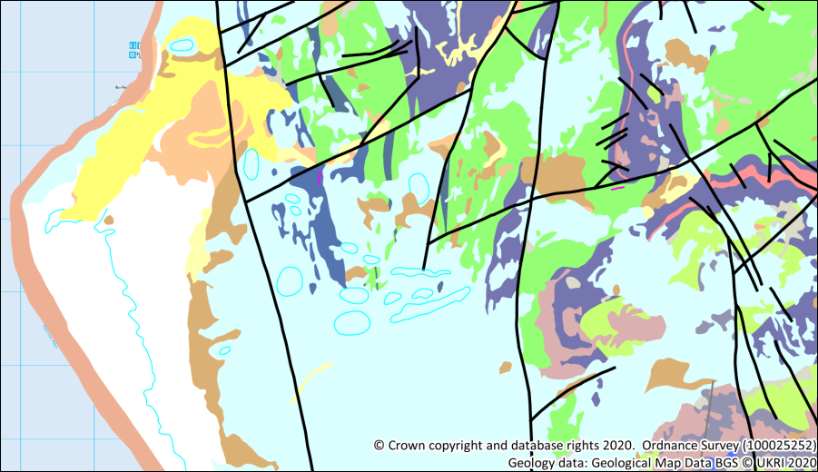

Using BGS data from Digimap
The background to using BGS data from Digimap will be covered in the lecture segment at the beginning of the class, and the presentation and any other supporting materials will be available in Minerva. The lecture segment should help you to understand why you are doing these exercises. If you still aren’t sure, please ask Clare.
Learning outcomes
When you have completed this section of the workbook you should be able to
- Demonstrate how to find BGS data in Digimap and download data for a particular area.
- Explain how to add BGS geological data to GIS and symbolise the data using BGS standard symbols/colours.
Introduction
It is possible to download shapefiles containing British Geological Survey (BGS) data at varous scales from the Digimap service. These can be added to GIS in the usual way. Once data has been added to a map symbolising the data can be an issue. This chapter gives you some suggestions for how to display the data.
Please refer to the Digimap chapter of these exercises for more information about how to use the Digimap download services.
Data to download
Log in to Digimap and download tiles of geological data in shapefile format for the area below from the Geology Data Download section.
You should download 1:50 000 Geology from the Onshore Geology section of the menu. Unfortunately 1:25 000 data is not available for this area.
Once you have downloaded the zip file containing your data save it to the folder with the rest of the data for this map then unzip it. Remember you can’t use data in QGIS until it has been unzipped.
Downloading style files
Digimap also provide style files so that you can use standard colours for the layers in the geology data that they provide.
- While you are in Digimap return to the home page and click on
Resourcesat the top right - Scroll down the resource centre page and look under
Help by Service - Click on
Geology Digimap Help - Next click on
Using map data with GISin the left-hand menu - Then click on
Geology Colour Schemes
This page gives links to style files for use with a range of BGS data and in a range of GIS software.
- For the data and GIS that you are using download
1:50,000 Scale QML.zipand save it in your GIS folder.
You will be using this file later so remember where you saved it to.
Adding BGS data to your map
The geological data from Digimap is provided in shapefile format in tiles which match the printed map sheets. Luckily the area we are working on is covered by a single sheet - sheet 135 for Harlech.
- If your North Wales map isn’t already open in QGIS, open it now.
- Find the unzipped
bgs-50kfolder in your Browser panel and have a look at the contents of theew135folder. The name refers to the map sheet number and England and Wales.
You should see that the Harlech area has three shapefiles containing data. These cover bedrock geology, linear geology and superficial geology. Some sheets also have other layers.
Note that these layers will cover a larger area than the rest of your map layers - this doesn’t matter. When you create a layout you will set the view so that you only see the area you actually want and anything outside of that just won’t be seen.
- Add all three of these layers to your map by dragging them into the Layers panel
- Group the geology layers by selecting all three and right-clicking
- Select to
Group Selectedthen give the group a name likeGeology.
Once the layers are grouped you’ll be able to move them around together, or turn them on and off just by clicking next to the group heading.
- Drag and drop the layers as necessary in the Layers panel so that they are in the order shown in the image below
- Have a look at the attribute table for the
ew135_harlech_bedrocklayer
The attribute table has a lot of columns and looks rather confusing. If you want to know more about the data the user guide is available as part of your download from Digimap - look in the bgs-50k > docs folder for the User_Guide_BGS_Geology...pdf file.
The data will be symbolised as single symbols and in random colours. You’ve seen previously how to set up categories for colours and symbology, but having seen the attribute table you’ll realise that doing that for these datasets would be time consuming.
Don’t worry - there is an easy way!
Using style files in QGIS
Earlier you downloaded the QGIS style files to match the 1:50 000 data from Digimap.
Warning
The bedrock style file is missing a key rock type for this area. Please go to Minerva and download the
gb_50k_bedrock.zipfile from the week 9 section. Unzip it and replace the downloaded qml file with the one you download from Minerva before following the instructions below.
- If you haven’t already unzipped the download file
50k_qml.zipmake sure that you unzip it to the same folder as your Llanbedr map. - Either double-click on the
ew135_harlech_bedrocklayer in the Layers panel or right-click and selectProperties. - Go to the
Symbologytab of the properties - At the bottom left of the symbology is a button which says
Style. Click on this button and selectLoad Style... - This opens the
Database Styles Manager. Make sure thatLoad styleis set toFrom File - Click on the three dots button next to
Fileand navigate to where you unzipped your qml files - Select the file called
gb_50k_bedrock.qml(i.e. the one which matches the file you need to symbolise) and clickOpen - Back in the
Database Styles Managerclick onLoad Style
The Symbology menu should change to Categorized and show you a long list of Symbols and values.

- Now click on
OKand the Bedrock layer should be symbolised.
You may not see it clearly at the moment as the superficial geology is covering a lot of the area.
Apply the style files to the superficial and linear geology
Repeat the instructions above to apply the appropriate style files to the superficial and linear geology layers.
You should have qml files called
gb_50k_superficial_deposits.qmlandgb_50k_linear.qml.
Once you have applied all three style files to the relevant layers you should have a map which looks like the following image.

This looks a lot better, but a geological map needs a background map showing places and other features of the location.
- Zoom in to
1:50 000using the scale dropdown below the map - Superficial geology isn’t necessary on this map so turn off that layer or remove it from your map
- Turn off the
raster_25k_3706482layer - this is too detailed for a geological map at this scale - Instead turn back on the
Places,Line features,Polygon featuresandTidal waterlayers. - Make the
ew135_harlech_bedrocklayer transparent so that you can see the 25k layer through it.
Copyright notice
All maps produced from BGS data downloaded from Digimap must carry a copyright acknowledgement. You signed up to this when you agreed to the licence conditions.
You can check the Resources page in Digimap to find the current required acknowledgement. As of November 2020 the text was the following:
Geological Map Data BGS © UKRI 20yy
Where yy is replaced by the current year.
Maps that also include OS data must in addition carry the OS copyright acknowledgment. This is currently:
© Crown copyright and database rights 2020. Ordnance Survey (100025252)
The Places, Line features, Polygon features and Tidal water layers are all sourced from OpenStreetMap and should be acknowledged as follows:
© OpenStreetMap Contributors
Final map
When you’ve finished symbolising your map and are happy with it export it as an image and upload it to your GIS portfolio notebook for feedback.
The image below shows a suggested final version of your map. Your map may not look identical to this and that is not a problem as you will have made some of your own decisions about colours and symbology.
Keep your Llanbedr, North Wales project for the next set of exercises.